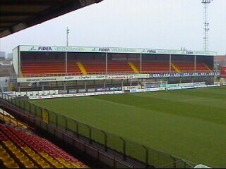

|
KV Mechelen - Standard Liege (1-1) |
It's shit and you know it's shit.....

Het stadion 5 uur voor de aftrap. Op deze foto
een blik vanaf tribune 1 op tribune 3 met boven
vak D en beneden "ons" vak G (€10,-).
Tribune 2 met bovenin de business seats.
De Roda-afvaardiging.
Het is een financiële wanorde bij KV Mechelen.
Hier is ooit de Europacup II gewonnen ten koste
van Ajax (1988). Het Chalet op de achtergrond
is om veiligheidsredenen gesloten (er was iemand
door de vloer gezakt).
Een vrolijke plasser.
De Romboudstoren die het mooie stadje
Mechelen domineert.
In een leuke hebbedingetjeswinkel ontdekten we
de onderbroek van Henk Muis.
Na het winkelen bezochten we Kebabland. Het
lamsvlees viel niet goed bij Koempel Gebronx.
Verzamelen in café de Rommelpot. Hier hadden
we afgesproken met Patje en Melleke.
Onder begeleiding van 2 "stillen" liepen we in
vrij hoog tempo naar het stadion.

Het stadion zat aardig vol met 7.000 toeschouwers.
Mechelen speelde redelijk aanvallend. De club
herbergt 3 Nederlanders: Viscaal, Van Gaalen
en Dave de Jong.
Spannend moment. Beide teams kregen tamelijk
veel scoringskansen hoewel Mechelen over het
geheel gezien de iets betere ploeg was.
Nadat een speler van Luik zijn 2e gele kaart
incasseerde en moest inrukken werden de Walen
toch gevaarlijker. Ze scoorden vroeg in de tweede
helft maar het lukte Mechelen om 5 minuten
nadien de gelijkmaker te maken.
Vreugde op de tribunes.
Onze gastgevers Patje en Melleke in het koude
stadion Achter de Kazerne.
Na afloop van de match naar de grote kantine die
versgeverfd rook. Leuke ruimte maar helaas veel
te veel TL-buizen.
KVM schoot niks op met het gelijkspel aangezien
alle staartclubs vandaag wonnen.
Mechelenmeisje met buff (=bandana).
Het werd steeds gezelliger!

Patje gaat een dozijn handtekeningen aan
Preud'homme vragen.
We kletsen ook nog even met Eric Viscaal.
We sluiten een mooie dag Mechelen stijlvol af
met een lokaal streekproduct!
Patrick en Christel bedankt voor de gastvrijheid!